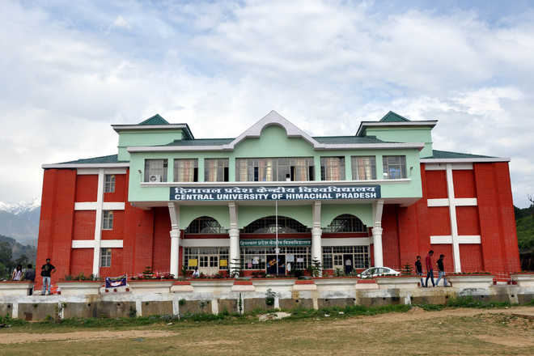

My name is Abhishek Borkakoty, and I am a student at the Central University of Himachal Pradesh, currently pursuing an MSc degree in Bioinformatics. In the captivating field of bioinformatics, I am immersed in the dynamic intersection of biology, computer science, and data analysis. Pursuing my MSc degree in Bioinformatics at the Central University of Himachal Pradesh, I delve into deciphering the complexities of biological data using computational tools and techniques. From unraveling the mysteries of genomic sequences to understanding intricate molecular structures, bioinformatics empowers me to bridge the gap between life sciences and information technology. The program not only equips me with the essential skills to analyze vast datasets but also fosters a profound understanding of how computational approaches can unravel biological phenomena, contributing to advancements in genomics, proteomics, and drug discovery.
Simultaneously, my burgeoning interest in web development, particularly Front-End development, adds an exciting dimension to my academic journey. The visual and interactive aspects of crafting user interfaces and experiences captivate me, inspiring creativity within the realm of code. Exploring technologies like HTML, CSS, and JavaScript, I find joy in transforming ideas into engaging and responsive web applications. The intricacies of Front-End development allow me to blend design aesthetics with functionality, making digital experiences intuitive and visually compelling. As I navigate through the dynamic world of web development, I am driven by the prospect of contributing to the seamless convergence of technology and user experience in the digital landscape.